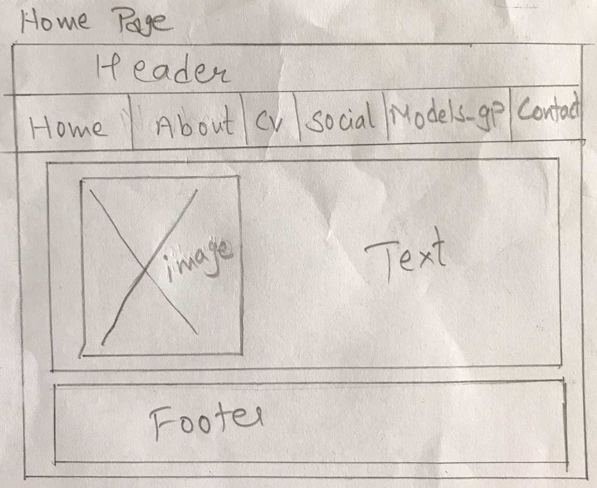
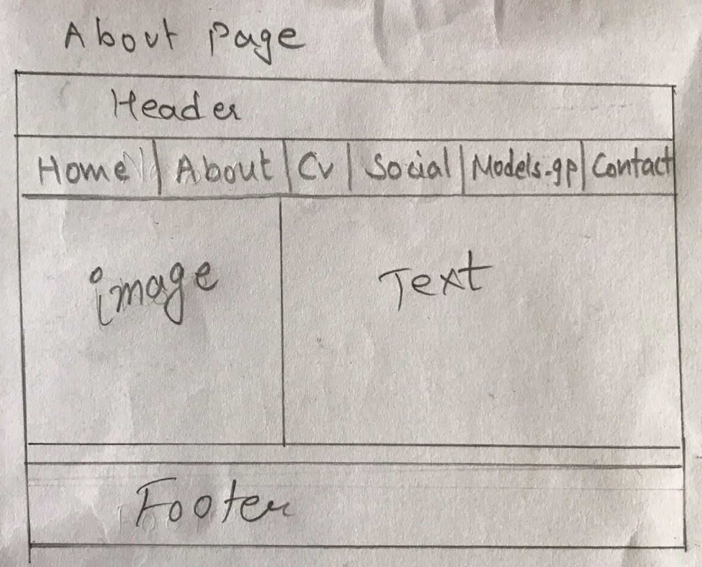
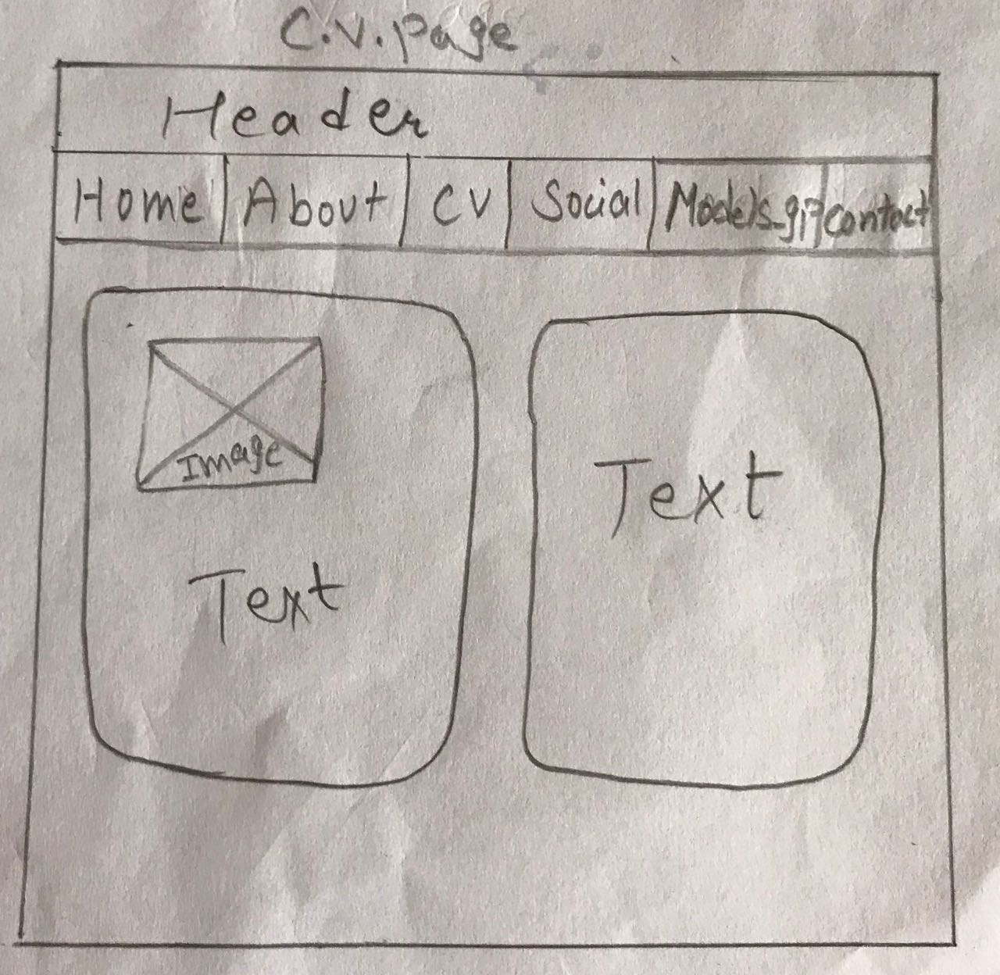
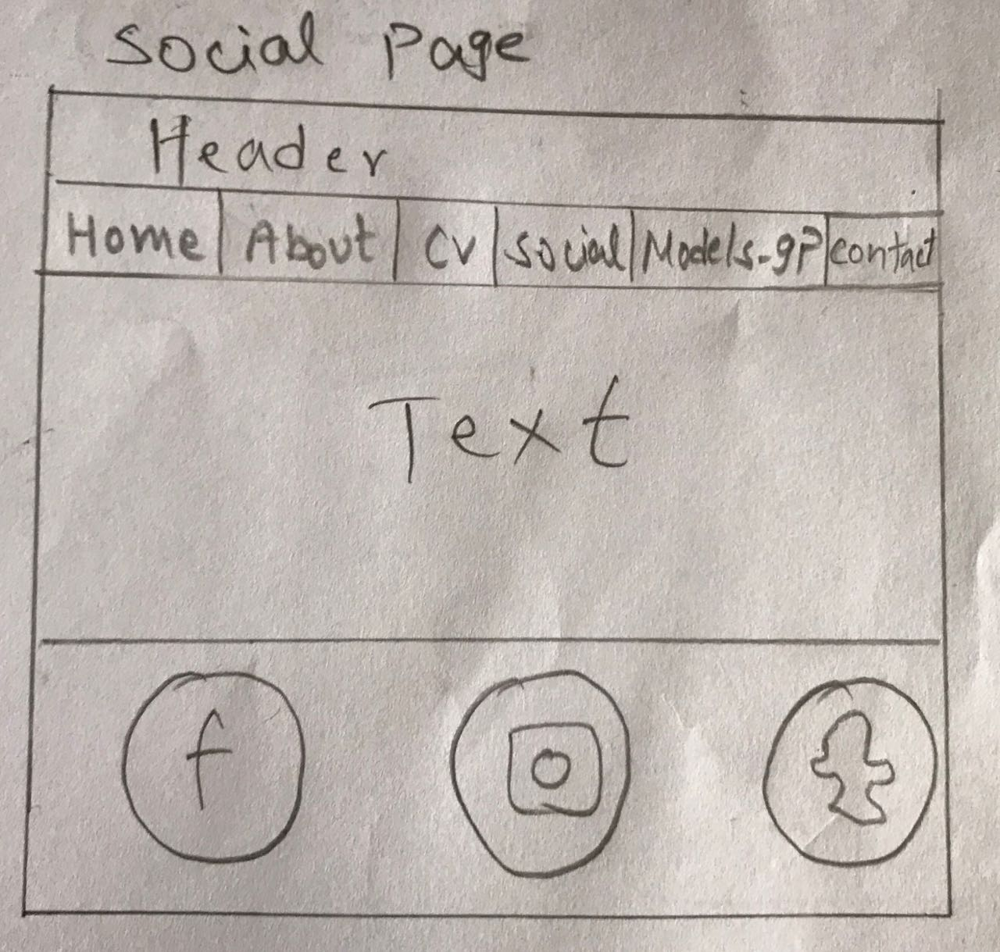
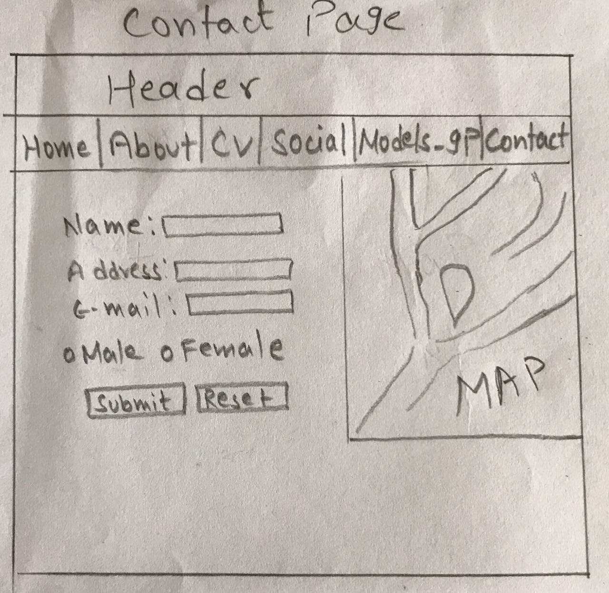

Introduction
webdesign is done by using HTML and CSS. At HTML we use only basic structures and CSS consists style and appearance of the webpage.
Wireframe
Wireframe means page layout of website and which is of pencil drawings. Here, I will be describing about each pages. In each wireframe of my webpage the header consits of my name which is written in white background. Navigation bar is of black color and the writings is done with white color. And I have also made the navbar hover and the color of hover is grey. The page which is currently active is denoted by the color green of the navigation bar.
wireframe of homePage
I have used five colors and designed my home page.I have added my photo in first div and written the word "Innovative and Creative" using the red text-shadow in another div.And by using grey color I have prepared the footer part and font-style is also changed.I have also put margin.
wireframe of aboutpage
This page also consists my photo and then a little bit about me regarding my personal information in different div. I have used same colors in section but one is light and another is dark blue. And the footer is also available.
wireframe of c.v.page
This page is divided into two divs and both has black box-shadow. First div consists of my small size photo as well as few words about my experience and so on. And the other div consists of my interests and achievements and so on.
wireframe of socialpage
In section part red text-shadow of light red is used with background color blue.The Footer contains social media links like facebook, instagram and twitter and after clicking it the respective accounts of mine opens.
wireframe of Contact Page
In the contact page the form properties are used at first div where the text box, radio, submit and reset button are used. And then at another map is presented and only opens when the online.
Mockups
I have prepared mockup of each page about how it actually looks like.
Mockup of homepage

Mockup of about page

Mockup of C.V. page

Mockup of social page

Mockup of contact page

Responsive
Responsive webdesign makes our webpage look good and is all about and using HTML and CSS to resize and fit in every devices. All the webpages that I have created are made responsive. And while the page is opened in smaller devices then there are little changes like the navigation bar shifts at the centre and the respective bar's active color green will become the row's full color.